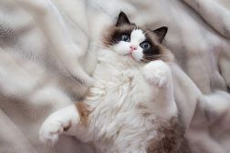
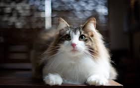
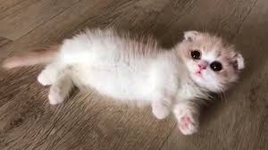

We are a non-profit organization dedicated to finding homes for abandoned cats.
Our Cats

Whiskers
Age: 2 years
Breed: Ragdoll

Mittens
Age: 3 years
Breed: Norwegian

Shadow
Age: 1 year
Breed: Munchkin
Contact Us
×
Whiskers
Age: 2 years
Breed: Ragdoll
Description: Whiskers is a playful and loving cat who enjoys long naps in the sun and chasing toy mice. She is looking for a forever home where she can get lots of cuddles.
×
Mittens
Age: 3 years
Breed: Norwegian
Description: Mittens is an affectionate and curious cat who loves to explore and interact with people. She would thrive in a home with lots of activity and attention.
×
Shadow
Age: 1 year
Breed: Munchkin
Description: Shadow is a quiet and gentle cat who enjoys a calm and peaceful environment. She would be a perfect companion for someone who values tranquility.